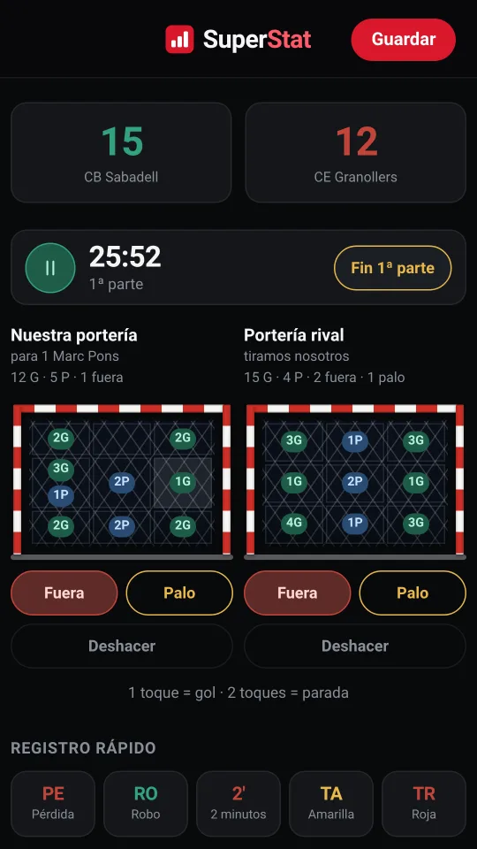
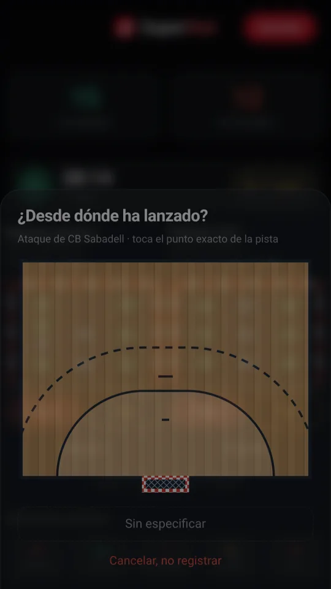
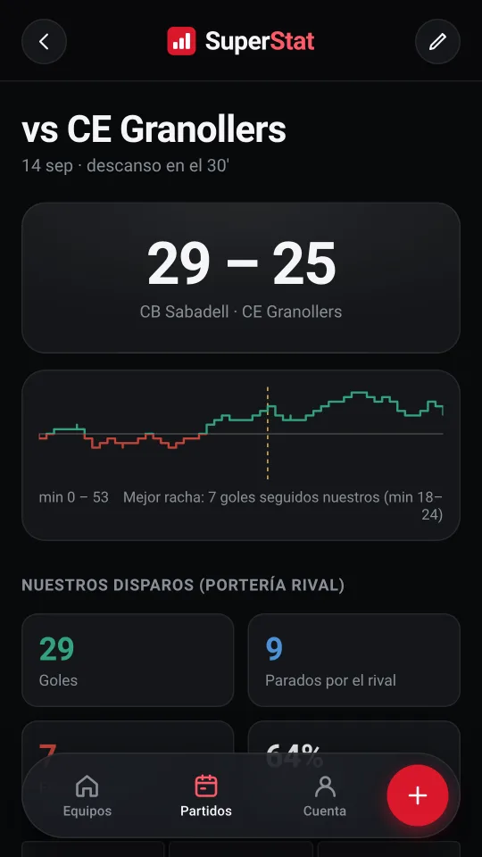
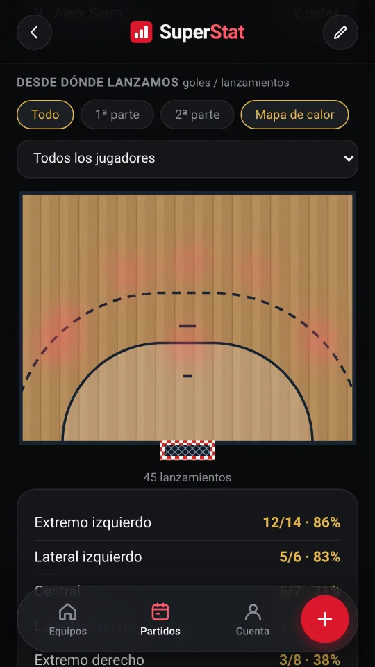
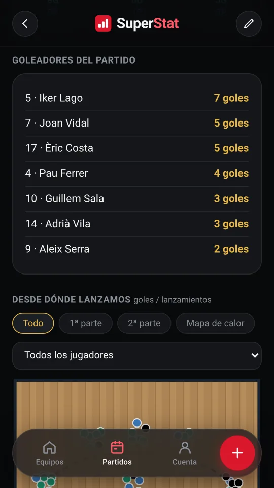
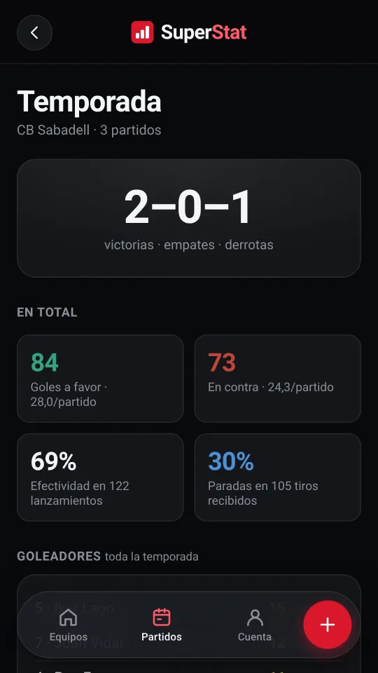
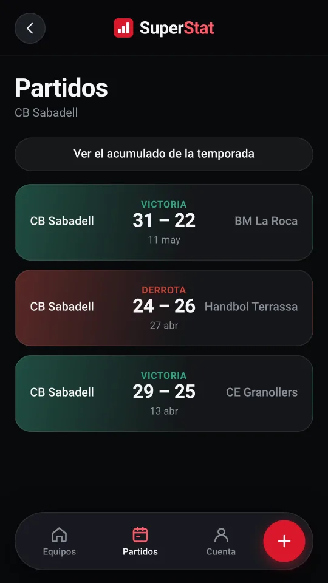
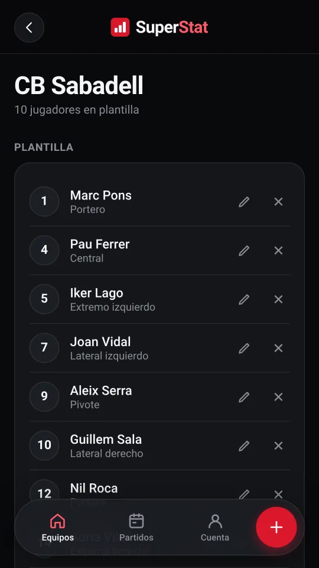

Las dos porterías
La tuya y la del rival, divididas en nueve zonas. Un toque en una zona es gol, dos toques son parada, y hay botón aparte para fuera y para palo.
Anotas el partido mientras se juega, con el móvil en la mano, y al pitido final la ficha ya está hecha.

Todo lo que pasa en la pista cabe en una pantalla, para no perder de vista el juego mientras anotas.
La tuya y la del rival, divididas en nueve zonas. Un toque en una zona es gol, dos toques son parada, y hay botón aparte para fuera y para palo.
Marca con un dedo el punto exacto desde el que se ha lanzado, sobre una media pista a escala. Si prefieres ir más rápido, se apaga.
Con pausa, y un botón para decidir tú cuándo acaba la primera parte. Cada anotación se queda con su minuto y su parte, sin dar por hecho que duren treinta minutos.
Se pregunta una sola vez y se queda puesto, así que los goles encajados también tienen dueño y el porcentaje de paradas significa algo.
Registro rápido de pérdida, robo, dos minutos y tarjetas, con el mismo par de toques.
Las altas y las bajas quedan anotadas, y de ahí sale el más/menos de cada jugador: qué hace el marcador mientras está jugando.
Por si se te va el dedo. La última anotación se quita y ya está.
La ficha sale sola de lo que has anotado. No hay que pasar nada a limpio.
Con los goles repartidos por zona de portería.
Cómo se fue el partido, con la mejor racha marcada.
Quién marcó, quién paró, y qué hacía el marcador con cada jugador en pista.
Sobre la pista, con filtro por jugador y por parte, y mapa de calor.
La zona de lanzamiento cruzada con la parte de la portería: el dato que de verdad sirve para preparar a un portero.
El partido a CSV, o compartido como imagen desde el propio móvil.
Las ocho pantallas que más se usan, de un partido de verdad anotado con la app.







Cada partido que guardas suma. El equipo tiene su propio acumulado, sin tener que abrir uno por uno los partidos de todo el año.
Varios equipos, cada uno con su plantilla, y los mismos datos en el móvil y en el ordenador.
Empieza gratis y sigue gratis. El plan de pago no desbloquea estadísticas: las tienes todas desde el primer partido. Lo único que quita son los dos topes.
0 € para siempre
Sin tarjeta y sin caducidad.
3,49 € al mes
Impuestos aparte. Cancela cuando quieras.
| Qué llevas | Gratis | Pro |
|---|---|---|
| Equipos | 1 | Sin límite |
| Partidos guardados | 5 | Sin límite |
| Anotar en vivo: tiros, eventos y reloj | ||
| Punto de lanzamiento sobre la pista | ||
| Mapa de tiros y mapa de calor | ||
| Estadísticas de temporada | ||
| Más/menos por jugador | ||
| Exportar a CSV y compartir | ||
| Funciona sin cobertura | ||
| Sincronización entre dispositivos | ||
| Cuatro idiomas | ||
| Sin anuncios ni seguimiento | ||
| Sostiene el proyecto | — |
El pago lo gestiona Stripe. SuperStat no guarda los datos de tu tarjeta.
Así que la app no la necesita. Se abre y se anota igual, y lo que quede pendiente se sube solo cuando vuelve la red.
Si el móvil cierra la app a mitad de partido, al volver a entrar te ofrece seguir donde lo dejaste.
Una cuenta, con Google o con correo y contraseña, y los mismos datos en el móvil y en el ordenador.
Sin publicidad, sin analítica y sin seguimiento: cada cuenta solo puede ver lo suyo. Puedes exportar cualquier partido, o borrar lo que quieras cuando quieras.
Se abre en el navegador, no hay nada que instalar y es gratis.